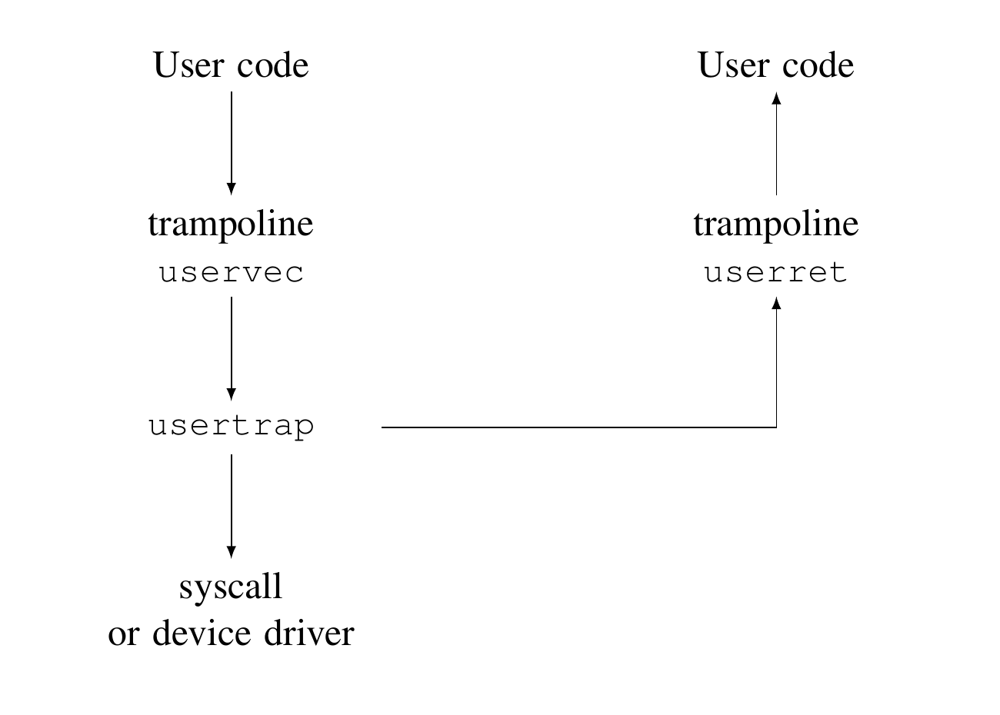

第 4 章 陷阱和系统调用
有三类事件会导致 CPU 暂停普通指令执行，并强制把控制权转移到处理该事件的特殊内核代码。第一类是系统调用：用户程序执行 ecall 指令，请求内核为它做事。第二类是异常：某条指令（用户指令或内核指令）做了非法事情，例如从无效虚拟地址加载。第三类是设备中断：设备发出需要关注的信号，例如磁盘硬件完成读或写请求。
本书用陷阱（trap）作为这些情况的统称。通常，在陷阱发生时正在执行的代码之后需要继续运行，并且不应该意识到发生过特殊事件。也就是说，我们常常希望陷阱是透明的；这对设备中断尤其重要，因为被中断的代码通常并不期待中断。陷阱强制控制权进入内核；内核保存寄存器和其他状态，以便之后恢复执行；内核执行适当的处理代码（例如系统调用实现或设备驱动）；内核恢复保存的状态并从陷阱返回；原来的代码从离开的位置继续执行。
xv6 在内核中处理所有陷阱；陷阱不会投递给用户代码。系统调用自然应该由内核处理。中断也适合由内核处理，因为隔离要求只有内核能使用设备，而且内核能够在多个进程之间共享设备。异常也适合由内核处理，因为内核可能能处理来自用户空间的异常（第 5 章会给出例子），或者通过杀死出错程序作出响应。
xv6 的陷阱处理分四个阶段：RISC-V CPU 执行的硬件动作；为内核 C 代码做准备的少量汇编指令；决定如何处理陷阱的 C 函数；以及系统调用或设备驱动服务例程。虽然三类陷阱之间有共性，似乎内核可以用一条统一路径处理所有陷阱，但实践中把两种不同情况分开更方便：来自用户空间的陷阱，以及来自内核空间的陷阱。处理陷阱的内核代码（汇编或 C）常称为处理程序（handler）；处理程序的第一批指令通常用汇编写成，有时称为向量（vector）。
继续之前，请阅读 kernel/trampoline.S，以及 kernel/trap.c 中的 usertrap() 和 prepare_return()。
4.1 RISC-V 陷阱机制
每个 RISC-V CPU 都有一组硬件控制寄存器。内核写这些寄存器，告诉 CPU 如何处理陷阱；内核也读这些寄存器，了解已经发生的陷阱。RISC-V 文档给出了完整说明 [3]。riscv.h (0500) 包含 xv6 使用的定义。最重要的寄存器概览如下：
stvec：内核在这里写入陷阱处理代码的地址；RISC-V 会跳转到stvec中的地址处理陷阱。sepc：陷阱发生时，RISC-V 在这里保存程序计数器（因为 pc 随后会被stvec的值覆盖）。sret（从陷阱返回）指令把sepc复制到 pc。内核可以写sepc来控制sret返回到哪里。scause：RISC-V 在这里放入一个数字，描述陷阱原因。sscratch：内核陷阱处理代码用它来避免在保存用户寄存器前覆盖用户寄存器。sstatus：sstatus中的 SIE 位控制设备中断是否启用。如果内核清除 SIE，RISC-V 会推迟设备中断，直到内核再次设置 SIE。SPP 位指示陷阱来自用户模式还是监督者模式，并控制sret返回到哪种模式。
上述寄存器只能在监督者模式（即由内核）访问；CPU 会阻止用户代码读写它们。多核芯片上的每个 CPU 都有自己的一组这些寄存器，并且任意时刻可能有多个 CPU 正在处理陷阱。
当 RISC-V 硬件强制产生陷阱时，会执行以下步骤：
- 如果陷阱是设备中断，并且
sstatus的 SIE 位已清除，则不执行后续步骤。 - 通过清除
sstatus中的 SIE 位禁用中断。 - 把 pc 复制到
sepc。 - 把当前模式（用户或监督者）保存在
sstatus的 SPP 位中。 - 把陷阱原因编号写入
scause。 - 把模式设为监督者模式。
- 把
stvec复制到 pc。 - 从新的 pc 开始执行。

CPU 不会切换到内核页表，不会切换到内核栈，也不会保存 pc 之外的任何寄存器。这些任务必须由内核软件完成。CPU 在陷阱期间只做最少工作，一个原因是给软件提供灵活性；例如某些操作系统会在某些情况下省略页表切换以提高陷阱性能。
可以思考一下，上述步骤中是否有任何一步可以为了更快的陷阱而省略。虽然某些情况下更简单的序列可以工作，但一般而言省略许多步骤会很危险。例如，假设 CPU 不切换程序计数器，那么来自用户空间的陷阱可能在仍执行用户指令的同时切换到监督者模式。这些用户指令可能破坏用户/内核隔离，例如修改 satp 寄存器，使其指向一个允许访问所有物理内存的页表。因此 CPU 切换到内核指定的指令地址，即 stvec，非常重要。
4.2 来自用户空间的陷阱
xv6 根据陷阱发生时是在内核执行还是用户代码执行，采用不同方式处理陷阱。这里讲来自用户代码的陷阱；4.5 节描述来自内核代码的陷阱。
用户空间中执行时可能发生陷阱：用户程序发起系统调用（ecall 指令）、做了非法事情，或者设备产生中断。如图 4.1所示，来自用户空间的陷阱高级路径是 uservec (3071)，然后是 usertrap (3337)；当内核准备返回时，usertrap 返回到 userret (3151)，由它执行 sret 回到用户空间。
xv6 陷阱处理设计的一个主要约束是：RISC-V 硬件在强制产生陷阱时不会切换页表。这意味着 stvec 中的陷阱处理地址必须在用户页表中有有效映射，因为陷阱处理代码开始执行时仍在使用用户页表。此外，xv6 的陷阱处理代码需要切换到内核页表；为了在切换后还能继续执行，内核页表也必须映射 stvec 指向的处理程序。
xv6 用 trampoline 页满足这些要求。这个页包含 uservec，也就是 stvec 指向的 xv6 陷阱处理代码。trampoline 页在每个进程的页表中都映射到虚拟地址 0x3ffffff000（称为 TRAMPOLINE），这是虚拟地址空间中的最后一页，因此位于程序自身使用的内存之上。trampoline 页在内核页表中也映射到同一虚拟地址。见图 2.3和图 3.3。因为 trampoline 页映射在用户页表中，陷阱可以在监督者模式下从那里开始执行。因为 trampoline 页也以同一地址映射在内核地址空间中，陷阱处理程序切换到内核页表后仍能继续执行。
uservec 陷阱处理程序的代码位于 trampoline.S (3071)。uservec 开始时，所有 32 个寄存器都包含被中断用户代码拥有的值。这 32 个值需要保存到某处内存中，以便内核稍后能在返回用户空间前恢复它们。向内存 store 需要一个寄存器保存目标地址，但此刻没有可用的通用寄存器。幸运的是，RISC-V 提供了 sscratch 寄存器。uservec 开头的 csrw 指令把 a0 保存到 sscratch。现在 uservec 有了一个可用寄存器（a0）。
uservec 的下一个任务是保存 32 个用户寄存器。内核为每个进程分配一页内存保存 trapframe 结构，其中包括保存 32 个用户寄存器的空间 (1992)。由于 satp 仍指向用户页表，uservec 需要在用户地址空间中映射 trapframe。xv6 把每个进程的 trapframe 映射到该进程用户页表中的虚拟地址 TRAPFRAME（0x3fffffe000），也就是 TRAMPOLINE 下面一页。每个进程的 p->trapframe 包含该进程 trapframe 的内核虚拟地址。
uservec 把寄存器 a0 设为地址 TRAPFRAME，并把所有用户寄存器保存到那里。随后它从 sscratch 取回用户的 a0 并保存到 trapframe 中。
内核先前把一些对 uservec 有用的值初始化到了 trapframe 中：当前进程内核栈地址、当前 CPU 的 hartid、usertrap 函数地址，以及内核页表地址。uservec 取出这些值，把 satp 切换到内核页表，并跳转到 C 函数 usertrap。
usertrap 的工作是判断陷阱原因、处理它并返回 (3337)。它首先修改 stvec，使内核中的陷阱由 kernelvec 而不是 uservec 处理。它保存 sepc 寄存器（保存的用户程序计数器），以供返回用户空间时使用。如果陷阱是系统调用，usertrap 调用 syscall 处理；如果是设备中断，调用 devintr；如果是页错误，调用 vmfault；否则就是异常（例如使用无效地址），内核会杀死出错进程。系统调用路径会把保存的用户程序计数器加 4，因为 RISC-V 在系统调用情况下会让程序指针指向 ecall 指令，而用户代码需要从下一条指令继续执行。usertrap 检查进程是否已被杀死，或者是否应该让出 CPU（如果这个陷阱是定时器中断）。
返回用户空间的第一步是调用 prepare_return (3404)。这个函数设置 RISC-V 控制寄存器，为未来来自用户空间的陷阱做准备：把 stvec 设为 uservec，并准备 uservec 依赖的 trapframe 字段。prepare_return 把 sepc 设为先前保存的用户程序计数器。最后，usertrap 返回 trampoline 页中的 userret (3151)，并在 a0 中传回指向用户页表的指针。
userret 把 satp 切换到进程的用户页表。回忆一下，用户页表映射了 trampoline 页和 TRAPFRAME，但没有映射内核的其他内容。trampoline 页在用户页表和内核页表中位于相同虚拟地址，这让 userret 在改变 satp 后仍能继续执行。从这一点开始，userret 唯一可使用的数据是寄存器内容和 trapframe 内容。userret 把 TRAPFRAME 地址加载到 a0，通过 a0 从 trapframe 恢复保存的用户寄存器，恢复保存的用户 a0，并执行 sret 回到用户空间。
uservec 和 userret 用汇编语言编写，因为用 C 代码保存或恢复所有寄存器，以及在切换页表后继续存活，都很困难。
4.3 代码：调用系统调用
用户程序调用库函数来发起系统调用。例如，shell 用下面的函数调用显示提示符（在 user/sh.c 中）：
write(2, "$ ", 2);下面是 user/usys.S 中的库函数：
write:
li a7, SYS_write
ecall
retC 编译器为函数调用生成的代码会把三个参数加载到寄存器 a0、a1 和 a2 中。然后 write() 函数把系统调用号 SYS_write (3566) 加载到 a7。内核会查看这些寄存器，确定目标系统调用和参数。ecall 指令从用户空间陷入内核，并导致 uservec、usertrap，然后 syscall 执行。
此时请阅读 kernel/syscall.c、kernel/sysfile.c 中的 sys_write()，以及 kernel/vm.c 中的 copyout()、copyin() 和 copyinstr()。
syscall (3731) 从 trapframe 中保存的 a7 取出系统调用号，并用它索引 syscalls (3706)。在上面的例子中，a7 包含 SYS_write (3566)，因此会调用系统调用实现函数 sys_write。
sys_write 返回时，syscall 把其返回值记录到 p->trapframe->a0。这会使原始用户空间调用 write() 返回该值，因为 RISC-V 的 C 调用约定把返回值放在 a0 中。系统调用通常用负数表示错误，用零或正数表示成功。
4.4 代码：系统调用参数
系统调用参数最初位于用户寄存器中，随后由内核陷阱代码移动到 trap frame。内核函数 argint、argaddr 和 argfd 从 trap frame 取出第 n 个系统调用参数，分别作为整数、指针或文件描述符。
有些系统调用把指针作为参数，内核必须用这些指针读写用户内存。例如 write 系统调用会把用户空间中要写入数据的指针传给内核。这类指针带来两个挑战。第一，用户程序可能有 bug 或恶意，可能传给内核一个无效指针，或者一个试图诱骗内核访问内核内存而非用户内存的指针。第二，xv6 内核页表映射和用户页表映射不同，因此内核不能用普通指令从用户提供的地址 load 或 store。
内核实现了一些函数，用来安全地在用户提供的地址之间传输数据。fetchstr 就是一个例子 (3624)。像 exec 这样的文件系统调用使用 fetchstr 从用户空间取出字符串文件名参数。fetchstr 调用 copyinstr 完成困难部分。
copyinstr (1833) 从用户页表 pagetable 中的虚拟地址 srcva 最多复制 max 字节到 dst。由于 pagetable 不是当前页表，copyinstr 使用 walkaddr（它调用 walk）在 pagetable 中查找 srcva，得到物理地址 pa0。内核页表把所有物理 RAM 映射到等于 RAM 物理地址的虚拟地址。这允许 copyinstr 直接从 pa0 复制字符串字节到 dst。walkaddr (1520) 检查用户提供的虚拟地址是否属于进程的用户地址空间，因此程序不能诱骗内核读取其他内存。类似函数 copyout 把数据从内核复制到用户提供的地址。
4.5 来自内核空间的陷阱
请阅读 kernel/kernelvec.S，以及 kernel/trap.c 中的 kerneltrap()。
xv6 对来自内核代码的陷阱采用不同于用户代码陷阱的处理方式。进入内核时，usertrap 会把 stvec 指向 kernelvec (3211) 处的汇编代码。由于 kernelvec 只会在 xv6 已经处于内核中时执行，kernelvec 可以依赖 satp 已设为内核页表，栈指针也指向有效内核栈。kernelvec 把所有 32 个寄存器压入当前栈，稍后从那里恢复，使被中断的内核代码能不受干扰地继续。
kernelvec 把寄存器保存在被中断内核线程的栈上，这是合理的，因为寄存器值属于该线程。如果陷阱导致切换到另一个线程，这一点尤其重要；在这种情况下，陷阱实际上会从新线程的栈返回，而被中断线程保存的寄存器会安全地留在自己的栈上。
保存寄存器后，kernelvec 跳转到 kerneltrap (3453)。kerneltrap 只准备处理一种陷阱：设备中断。它调用 devintr (3506) 处理它们。如果陷阱不是设备中断，那就一定是异常，例如内核代码试图使用无效指针。这只能由内核代码 bug 导致。内核在这种情况下无法恢复，因此调用 panic()，打印错误信息并停止。
如果 kerneltrap 是由于定时器中断被调用，并且某个进程的内核线程正在运行（而不是调度器线程），kerneltrap 会调用 yield，让其他线程有机会运行。之后某个线程会让出 CPU，使我们的线程及其 kerneltrap 再次恢复。第 8 章解释 yield 中发生的事情。
kerneltrap 完成工作后，需要返回到被陷阱中断的代码。由于 yield 可能扰乱 sepc 和 sstatus 中的先前模式，kerneltrap 一开始会保存它们。现在它恢复这些控制寄存器并返回 kernelvec (3237)。kernelvec 从栈中弹出保存的寄存器并执行 sret，这会把 sepc 复制到 pc，并恢复被中断的内核代码。
xv6 在 CPU 从用户空间进入内核时，把该 CPU 的 stvec 设为 kernelvec；你可以在 usertrap 中看到这一点 (3346)。但有一小段时间，内核已经开始执行而 stvec 仍设为 uservec，在这段时间内绝不能发生设备中断。幸运的是，RISC-V 在开始接收陷阱时总会禁用中断，并且 usertrap 在设置 stvec 之后才重新启用中断。
4.6 现实世界
如果把内核内存映射到每个进程的用户页表中（清除 PTE_U），就可以消除对 trampoline 页的需求。这也会消除从用户空间陷入内核时切换页表的需求。进而，内核中的系统调用实现可以利用当前进程的用户内存已经被映射这一事实，让内核代码直接解引用用户指针。许多操作系统使用过这些思想来提高效率。xv6 避免使用它们，是为了降低内核因意外使用用户指针而出现安全 bug 的可能性，并减少一些为了确保用户虚拟地址和内核虚拟地址不重叠而需要的复杂性。
4.7 练习
trampoline.S和kernelvec.S中的部分或全部代码能否用 C 而不是汇编编写？- 有没有办法消除每个用户地址空间中对特殊
TRAPFRAME页的映射？例如，能否修改uservec，使它简单地把 32 个用户寄存器压入内核栈，或者存储到proc结构中？ - xv6 能否修改为消除特殊的
TRAMPOLINE页映射？